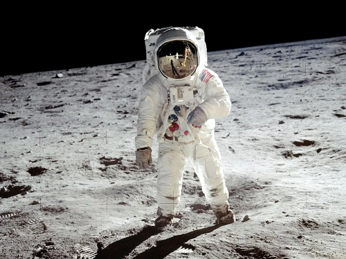

Man on the Moon

"One small step for man, one giant leap for mankind..." - Neil Armstrong
History in the Making
Moon Landings
| Mission | Landing Date | Module Crew |
|---|---|---|
| Apollo 11 | July 20, 1969 | Neil Armstrong, Buzz Aldrin |
| Apollo 12 | November 19, 1969 | Pete Conrad, Alan Bean |
| Apollo 14 | February 5, 1971 | Alan Shepard, Edgar Mitchell |
| Apollo 15 | July 30, 1971 | David Scott, James Irwin |
| Apollo 16 | April 21, 1972 | John Young, Charles Duke |
| Apollo 17 | December 11, 1972 | Gene Cernan, Jack Schmitt |
Two Powers & Two Rockets
USA: Saturn V
The Saturn V rocket stood 363 feet tall, weighed 2,938 tons, and could carry almost 265,000 lbs in payload to the moon. The rocket was used in nine crewed flights to the moon.
USSR: N1
The N1 rocket was 344 feet tall, weighed 2,750 tons, and could carry 209,000 lbs in payload to the moon. The rocket was designed later than Saturn V, and its chief designer died during development. The progam was officially canceled in 1976.
Artemis
The Future
Where will we go from here?